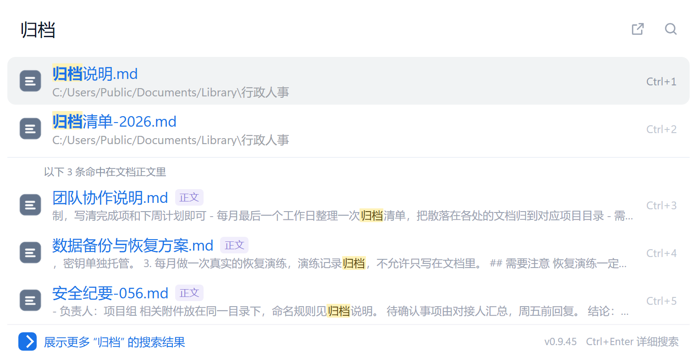
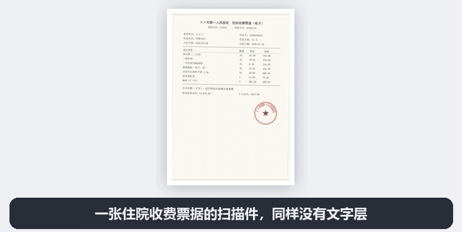

扫描件
也能搜
影印的合同、拍下来的发票、图片版 PDF——这些文件里没有一个字能被系统搜到。 第二大脑把它们认出来，双击 Ctrl 就能搜到纸上那一句话。
约 180 MB不用账号不联网OCR 已内置

连「归档」这种词出现在哪句话里都标出来了。
为什么搜不到
你的电脑里有一半文件，搜索引擎看不见
Everything、Listary 这些工具很快，但它们读的是文件名和文件里已经存在的文字。 而对下面这些文件，「文里已有的文字」是零——不是搜得慢，是根本没有东西可搜。
对方寄来的合同是扫描件
用复印机扫的、盖章后回传的，一张张图。想找「逾期付款」那一条，只能一个个打开翻。
报销发票是拍的照片
手机拍的、扫描的，几万块一张张文件名都是 IMG_2043.jpg。要找某家供应商那张，无从下手。
往年的教案是图片 PDF
老课件导出成 PDF 时没带文本层，写新教案想复用某一段，得从头翻到尾。
它能做什么
一个程序，把这件事从头做到尾
不做插件、不装 Python、不用单独配 OCR 引擎。装完就有一个 exe， 索引、识别、搜索全在里面。
扫描件 OCR
图片型 PDF、照片、截图，先认出文字再进索引。中文模型已内置，不需要联网、不需要另装。
双击 Ctrl 就出来
不离开手上的事。弹窗浮在屏幕中间，输入两个字，结果按前缀和最近使用排好，回车打开。
连文件名一起搜
全盘文件名索引，拼音全拼和首字母都认。搜「hetong」也能找到合同，中文英文混着打都行。
东西不出这台电脑
索引是一个本地 SQLite 文件。不传云端、不建账号、不依赖任何服务，断网照用，拔网线也照用。
看效果
两段真实操作，没有剪辑
合同里的那一句
扫描件 PDF 零文本层。输入关键词，结果里直接给出命中片段和所在页，点开就跳到原文位置。

发票里的那家供应商
几万张图片发票按内容搜。不用记得文件名，只要记得上面印的字。
免费与专业版
日常用，免费版就够了
搜索、OCR、快搜窗、右键打包——这些全部免费，没有次数限制，不会过期。 专业版只放「批量处理」这类工作流功能，用来养这个项目继续做下去。
免费版
一直免费装完就能用，功能不打折。
- 双击 Ctrl 快搜窗
- 全盘文件名索引 + 拼音
- 正文全文搜索
- 扫描件 OCR（自动建索引）
- 右键打包、查重、时间线
- 五种界面语言
没有任何功能需要「升级才能用」，也不会在某个版本突然改成收费。
建索引时扫描件自动识别前几页；要把整本逐页认完，用专业版的批量 OCR。
专业版
定价未定给每天要处理一整个文件夹的人。
- 搜索结果导出 Excel（已完成）
- 整本扫描件逐页识别（已完成）
- 案卷 / 教案 / 合同归档模板
- 多库切换（工作 / 个人分开）
一次买断，不做订阅。授权码离线校验，不绑手机号、不联网验证。 你需要哪个功能？告诉我，我按需求排优先级。
常见问题
先说在前面，免得你以为装坏了
首次运行弹出「Windows 已保护你的电脑」
正常。代码签名证书一年要几千块，个人项目没买，Windows 看到没有签名的 exe 就会拦一下。 点 更多信息 → 仍要运行 即可。这不是中毒，也不代表文件有问题。
装好后窗口是白的 / 打不开
少数 Win10 老机器缺 WebView2 运行时。程序会给出下载地址，装完再启动就好。
也可以直接用浏览器打开 http://127.0.0.1:8765，功能完全一样。
我的文件会被上传吗
不会。没有服务器，也没有联网的代码路径：OCR 模型在安装包里，索引是一个本地 SQLite 文件， 唯一的网络请求是你手动点「检查更新」时去 GitHub 查版本号。断网状态下全部功能照用。
和 Everything、Listary 有什么区别
它们读文件名和文件里已有的文字，速度极快，是很好的工具——如果你的文件都有文本层，用它们就够了。 第二大脑补的是另一块：没有文本层的扫描件、照片、图片版 PDF，它先 OCR 再进索引。 至于「哪个更好」，取决于你手上是多少扫描件。
要装 Python 或者 Tesseract 吗
都不用。安装包是 onedir 形式，Python 运行时、OCR 模型、前端资源全在里面， 解压即用。卸载直接删目录，注册表只写过一条开机自启（可在设置里关）。
公司电脑装不了软件怎么办
同一个 Release 里还有一个免安装的 portable.zip，解压到任意可写目录，
双击 SecondBrain.exe 就能跑，不需要管理员权限。